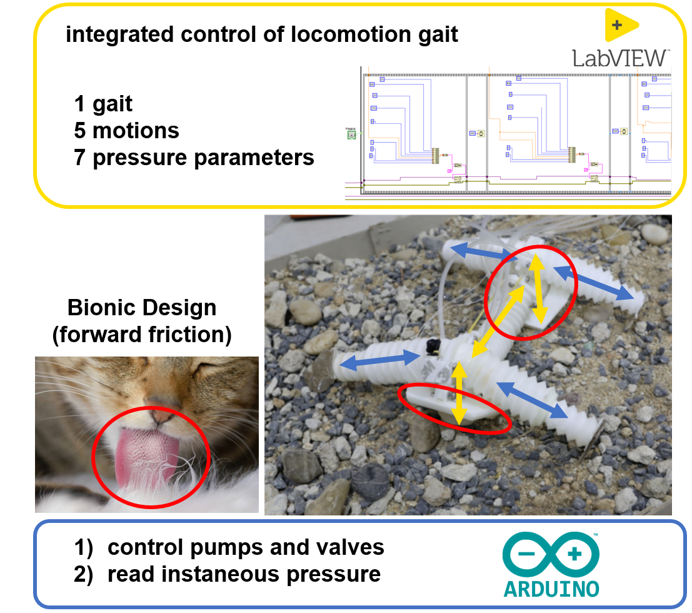
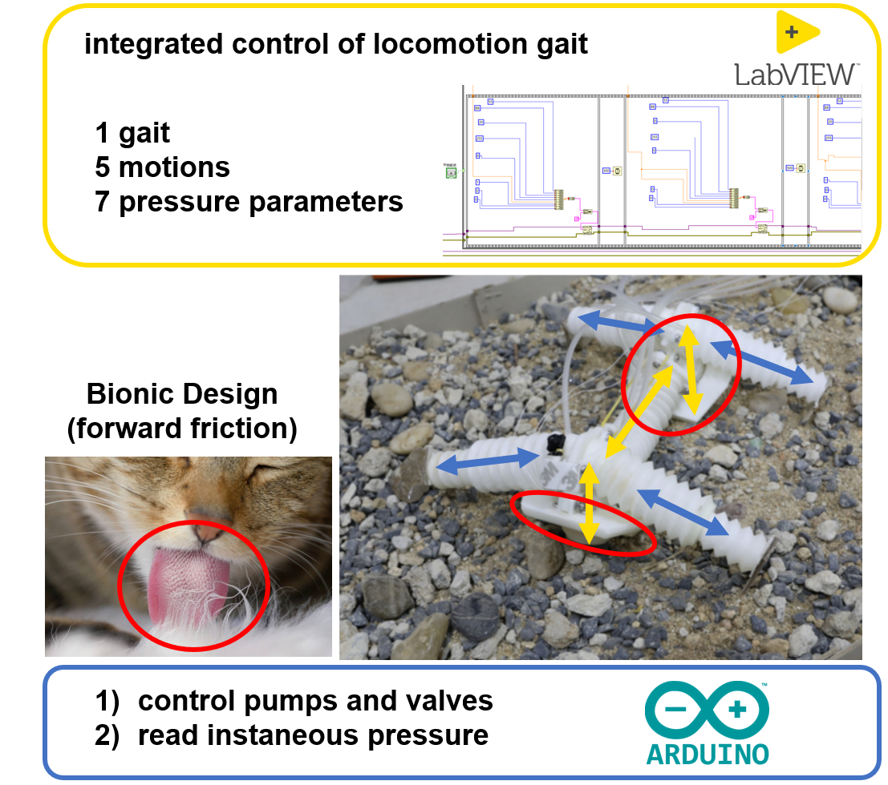

Shuyuan Wang
I am currently a senior undergraduate in Department of Mechanical and Energy Engineering (MEE), Southern University of Science and Technology (SUSTech), Shenzhen, where I am advised by Prof. Hongqiang Wang. I am now a member of Advanced Actuators & Robotics Lab (AAR Lab), where I work on electroadhesion, soft robotics, deep learning, and advanced actuation, etc.
Email / Curriculum Vitae / GitHub / Instagram
Education
Southern University of Science and Technology (SUSTech) 09 / 2018 - 06 / 2022
Department of Mechanical and Energy Engineering
Bachelor in Robotics Engineering
3.76 / 4.00
Tsinghua University (THU) 06 / 2021 - 09 / 2021
Department of Mechanical Engineering
Visiting Student in Deep Learning
Selected Projects
The ultimate goal of my research has been, and remains, to promote human performance, with the intersection of soft robotics, learning, advanced actuation, and exoskeletons. Since freshman year, I have been a member of the college basketball team, which has exposed me to the limited athletic capabilities of human beings compared with mechanical counterparts, and consequently our eagerness to enhance the performance of our bodies through collaboration with robots. The fundamental research question is to adapt high-strength mechanical power with low-strength organismal capabilities. To achieve my academic goal, I have participated in several projects.
SMN2019 Conference | slides | abstract | poster | news
Low adsorption efficiency and easy damage to electrodes in harsh environments have restricted the general use of robots. We combined a new kind of advanced actuation, electroadhesion, with the soft robot that was highly stretchable, exceedingly robust, and to some extent self-healing.


I designed an alternating interdigital structure with soft material and fluid electrodes. A mature fabrication process was correspondingly founded, and I conducted a comprehensive simulation on working electrostatic fields. Moreover, some sensing functions based on the capacitor model and wearable equipment were begun and are still under development.[1]
The most challenging task was finding a proper self-healing strategy to maintain adhesion power under inhospitable working conditions. I realized two and a half methods to overcome physical penetration and high voltage short-circuit. I first tuned the mechanical designs, which avoided interference from destroyed neighbor tubes and survived moderate accidents.


Then I was inspired by the pump function of spiders’ hearts and came up with the idea to supplement self-healing liquid in emergency tubes. I have substantiated the validity of this scheme through accumulated electrostatic data under multiple severe conditions.

Meanwhile, a purely material plan occurred to me. I have been investigating covalent-bond reformation and reshuffling, shape-memory effects, and high-strength synthetic proteins.[2] Honestly, it can be a little bit challenging to face material research as a robotic engineer. However, I keep a solid faith in my mind that if the material self-healing approach finally worked out on soft robots, the academic community would get shocked.
This project inspired me to apply moderate mechanical force and control to soft human tissues, especially under harsh and unpredictable conditions. As the principal investigator, I have received national and provincial funding under the supervision of Prof. Hongqiang Wang at SUSTech. A memorable moment was that I delivered an oral presentation at SMN2019 Conference when I was a sophomore.

Brief Summary
[1] Amjadi, M., Yoon, Y. J., & Park, I. (2015). Ultra-stretchable and skin-mountable strain sensors using carbon nanotubes–Ecoflex nanocomposites. Nanotechnology, 26(37), 375501.
[2] Wang, S., & Urban, M. W. (2020). Self-healing polymers. Nature Reviews Materials, 5(8), 562-583.
IEEE RoboSoft 2021 Conference | news
An obstacle course with fall, slope, terrain, and gap sections was set to showcase the motion capabilities and robustness of the soft robot. I designed a bionic cat tongue papillae structure and installed it on the robot's chassis to provide forward friction for locomotion on various surfaces. Then an origami-inspired leg with contraction and expansion was proposed to pass through the gap task. I wrote an embedded integrated control algorithm to realize robot gaits through sequent pneumatic actuation. I gradually realized the extraordinary athletic capacity performed by soft robots, and hence why they play an exclusive role in human performance enhancement, i.e., to gently convert mechanical force into organism motions.
 

Our group were honored to win the locomotion competition of IEEE RoboSoft 2021 Conference at Yale University. It was of great pride to be interviewed by college media.
This project was carried out under Prof. Gang Wang at Tsinghua University. The ultimate goal was to design an automated production facility that matches the geometry feature with the existing heat treatment processes. I was exposed to state-of-the-art research on neural networks and taught to apply the surpassing computation capability of deep learning to robotic research by Prof. Tom Mitchell from Carnegie Mellon University. Then, based on the point cloud, a straightforward recognition network on 3D aerospace models was proposed while current deep learning strategies focused on 2D convolution. From my point of view, if desired, everything with less human intelligence, such as matching, prediction, and other repeatable work, could be handled by machine learning. After all, the substantive work implemented by learning is to obtain fitting functions from accumulated data. I would like to apply these principles again in the future to assist me in predicting human behaviors via experimental data and applying appropriate robotic strategies to various situations automatically.

Research
Funding
- Self-healing Mechanism of the Soft Electrostatic Adhesion Actuator
Sponsor: National Undergraduate Training Program for Innovation and Entrepreneurship
Number: 202114325012
PI: Shuyuan Wang
2021 - 2022, ¥ 20K - Mechanism and Processing Method of Stretchable Soft Electrostatic Adhesion Unit
Sponsor: "Climbing Program" Special Funds for the Cultivation of Guangdong Province College Students' Scientific and Technological Innovation Special Funds
Number: pdjh2021c0044
PI: Shuyuan Wang
2020 - 2022, ¥ 20K - InFiber Mach–Zehnder Interferometer Based on Er Doped Up-Taper and Peanut-Shaped Fiber Structure in Fiber Ring Laser
Sponsor: Collegial Undergraduate Training Program for Innovation and Entrepreneurship
Number: 2021X17
PI: Shengjie Zhou
2021 - 2022, ¥ 10K
Publication
Videos
In memory of Kobe Bryant, I made this video for GE2229 Public Speaking.
This was my first college game in freshman year. We (yellow) gave them (red) a severe lesson.
Haha!
Scholarships
2021
First Class of the Merit Student Scholarship (Top 2% at SUSTech)
Excellent Student Service Scholarship (Top 5 of 150 Students)
2020
Progress Scholarship
Advanced Sports Team Scholarship
2019
Excellent Student Service Scholarship (Top 5 of 150 Students)
Popular Class Scholarship
Advanced Sports Team Scholarship
2018
Third Class of the Merit Student Scholarship (Top 10% at SUSTech)
Honors
2021
2020
2019
2018